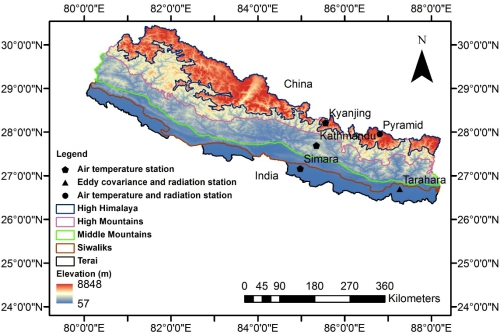
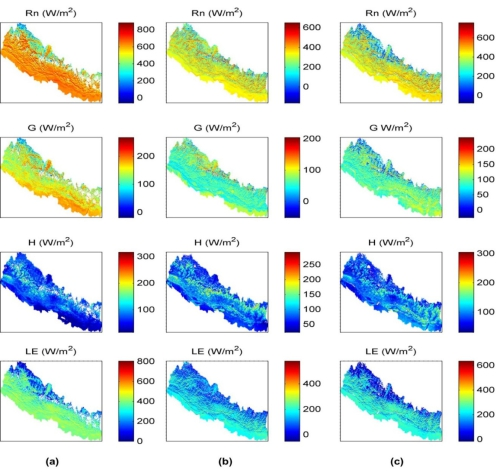
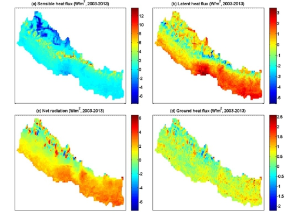

长期以来，青藏高原的热力加热在南亚夏季风系统中的重要作用普遍被学者们接受。近来，有学者认为喜马拉雅山对高纬度冷空气的阻挡使得印度大陆上空的对流得以发展，这对南亚夏季风的形成有着至关重要的作用。也就是说，学者们关于青藏高原在季风系统中所扮演的角色还存在一定的分歧，因此有必要对青藏高原及周边地区的热力作用进行更深入的研究。
近期，中国科学院青藏高原地球科学卓越创新中心、青藏高原研究所马耀明研究员课题组（尼泊尔籍博士生Pukar Man
Amatya为第一作者）利用改进的地表能量平衡方程与MODIS卫星资料和相关的地面观测资料，首次计算得到了喜马拉雅南坡尼泊尔地区的地表能量通量分布、季节变化及2003至2013年的变化规律，并利用2012年8月起在Tarahara地区架设的整个尼泊尔第一套大气湍流观测系统的观测资料对计算结果做了验证。研究结果显示：（1）尼泊尔地区能量通量分布与其地面的结构特征一致，且计算值与观测值的误差在10%以内；（2）尼泊尔地区不同季节的地表热通量分布特征有很大差别。在海拔较高的高喜马拉雅地区，感热通量占可利用能量的主要部分，而低海拔的其它地区，潜热通量占可利用能量的主要部分；（3）从2003到2013年的11年期间，喜马拉雅山南坡尼泊尔地区地表净辐射有增大趋势、感热通量总体有减小趋势（中部地区略显增加）、潜热通量总体有增加的趋势（中部地区略显减少）。
这一研究得到了中国科学院战略性先导专项B和国家自然科学基金等的支持，研究结果分别发表在Atmospheric Research、Theoretical and Applied Climatology和Journal of
Geophysical Research: Atmospheres等杂志上。

图1：研究区及观测站点

图2：净辐通量Rn、土壤热通量G、感热通量H、潜热通量LE的空间分布图。

图3：2003－2013年净辐通量Rn、土壤热通量G、感热通量H、潜热通量LE的线性变化趋势及显著性检验的空间分布图。
发表的论文目录：
Amatya, P.M., Y. Ma, C. Han, B. Wang, L.P. Devkota, 2015, Estimation of net radiation flux distribution on the
southern slopes of the central Himalayas using MODIS data, Atmospheric Research, 154: 146-154. doi:
10.1016/j.atmosres.2014.11.015.
原文链接：http://www.sciencedirect.com/science/article/pii/S0169809514004190
Amatya, P.M., Y. Ma, C. Han, B. Wang, L.P. Devkota, 2015,Mapping regional distribution of land surface heat
fluxes on the southern side of the central Himalayas using TESEBS, Theoretical and Applied Climatology，doi:
10.1007/s00704-015-1466-2.
原文链接：http://link.springer.com/article/10.1007%2Fs00704-015-1466-2
Amatya P. M., Ma Y., Han C., Wang B., and Devkota L. P, 2015, Recent trends (2003–2013) of land surface heat
fluxes on the southern side of the central Himalayas, Nepa, Journal of Geophysical Research: Atmospheres, doi:
10.1002/2015JD023510.
原文链接：http://onlinelibrary.wiley.com/doi/10.1002/2015JD023510/abstract